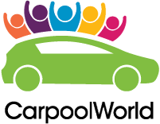

Carpooling
When you have to go by car, try and carpool
-
Check carpooling websites
CarpoolWorld
The CarpoolWorld web app is a free service for finding someone to carpool with, or offering to carpool. It can be used for recurring trips (such as a daily commute) or one-off trips.
Click here to go to Carpool World's listings for Cork -
Combine carpooling with other methods

GetThere.ie
Ygetthere.ie is an independent initiative to provide a single place to search for transport in Ireland. Services covered include:
- Rail (Irish Rail)
- Public Coach (Bus Éireann)
- Private/Regional Coach Operators (50+)
- Dublin connecting services (Dublin Bus, Luas & Dart) — see also hittheroad.ie for a map-based view of Dublin services.
- Lift Sharing